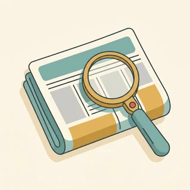

Letzte Woche ging es darum, wie man wegkommt. Heute darum, was man macht, wenn es nicht klappt. Auf der Tafel steht plötzlich fällt aus, alle um dich herum laufen los, und niemand erklärt etwas. Es gibt drei Dinge, die du dann brauchst: die Anzeigetafel lesen, den Ersatz finden und die richtige Person fragen. Genau das üben wir heute — auf Deutsch und in Ruhe.
Gleiches Thema, andere Sätze. Wechsle jederzeit — probier ruhig beide Seiten aus.
Auf der Tafel steht plötzlich rot
Die Anzeigetafel im Bahnhof zeigt immer dieselben Angaben: Uhrzeit, Ziel, Gleis — und rechts eine Spalte für die Meldung. Dort steht entweder eine Zahl (+15), ein Wort (fällt aus) oder ein Hinweis (Gleiswechsel). Wer diese drei Fälle kennt, versteht jede Tafel in Deutschland, ohne ein einziges Wort zu hören.
Wohin fährst du am häufigsten mit dem Zug?
Hattest du schon einmal einen Zug, der ausgefallen ist?
Liest du die Anzeigetafel oder schaust du in die App?
Was machst du zuerst, wenn dein Zug ausfällt?
Fragst du lieber jemanden oder suchst du selbst?
Wie gut funktionieren Bus und Bahn dort, wo du wohnst?
🔑 Drei Wörter reichen:Verspätung heißt, er kommt später. Fällt aus heißt, er kommt gar nicht. Gleiswechsel heißt, er kommt — nur woanders. Alles andere auf der Tafel kannst du heute ignorieren.
Und dann steht man da auf einem leeren Bahnsteig
Der Moment danach ist immer gleich: Der Bahnsteig leert sich, und du weißt nicht, ob du warten oder gehen sollst. Die gute Nachricht ist, dass es fast immer einen Ersatz gibt — einen späteren Zug, eine andere Strecke oder einen Bus. Man muss nur fragen. Und fragen ist einfacher, wenn man den Satz vorher einmal geübt hat.
Wartest du lieber oder suchst du eine andere Verbindung?
Wen fragst du am Bahnhof um Hilfe?
Wie kommst du nach Hause, wenn nichts mehr fährt?
Was ist schlimmer: eine Stunde warten oder dreimal umsteigen?
Wie reagierst du, wenn du deshalb zu spät zur Arbeit kommst?
Was würdest du dir von der Bahn in so einer Situation wünschen?
💡 Wichtig für Mittwoch: Heb deine Fahrkarte auf — auch die digitale. Ohne sie gibt es später kein Geld zurück. Am Mittwoch füllen wir gemeinsam das Formular aus, mit dem man sich das Geld holt.
Zwölf Wörter für den Tag, an dem nichts fährt
Sag jedes Wort laut — mit Artikel. Und häng gleich einen kurzen Satz an, so wie du ihn im Bahnhof sagen würdest.
die Anzeigetafel
„Auf der Anzeigetafel steht, dass der Zug ausfällt.“
💡 Man sagt auch kurz die Anzeige. Und der Satz, mit dem du sie liest: Auf der Tafel steht … — nicht in der Tafel.
der Ausfall
„Wegen eines Ausfalls stehe ich noch in Hagen.“
💡 Das Verb ist ausfallen — trennbar: Der Zug fällt aus. Verwechsle es nicht mit Verspätung: Die Verspätung kommt, der Ausfall kommt nicht.
das Gleis
„Der Zug fährt heute von Gleis acht statt von Gleis drei.“
💡 Immer mit von und auf: Der Zug fährt von Gleis 8, aber Ich stehe auf Gleis 8. Und das Wort, das du auf der Tafel suchst, heißt Gleiswechsel.
der Ersatzverkehr
„Es gibt Ersatzverkehr mit Bussen ab dem Vorplatz.“
💡 Ein typisches Bahnhofswort. Sprich es in zwei Teilen: Ersatz-verkehr. Dazu die Frage, die immer funktioniert: Wo fährt der Ersatzverkehr ab?
die Verbindung
„Gibt es noch eine andere Verbindung nach Köln?“
💡 Das wichtigste Wort beim Nachfragen. Eine Verbindung suchen, finden oder verpassen. In der App heißt es genauso.
der Anschluss
„Wenn ich hier warte, verpasse ich meinen Anschluss.“
💡 Der Satz, den du dir merken solltest: Ich erreiche meinen Anschluss nicht mehr. Genau dieser Satz bringt dir am Schalter Hilfe — und später oft Geld zurück.
die Auskunft
„Ich hole mir schnell eine Auskunft am Schalter.“
💡 Zwei Bedeutungen: die Information selbst und der Ort, wo man sie bekommt. Im Bahnhof steht an der Tür oft nur Information oder Reisezentrum.
die Fahrgastrechte
„Ab einer Stunde Verspätung greifen die Fahrgastrechte.“
💡 Nur im Plural. Das Wort steht auf dem Formular, das wir am Mittwoch ausfüllen. Und die einfache Version davon: Was steht mir zu?
die Fahrkarte
„Heb die Fahrkarte auf, die brauchst du später.“
💡 Auch das Ticket geht, das versteht jeder. Wichtig ist nur das Verb: aufheben — nicht wegwerfen. Ohne Fahrkarte kein Geld zurück.
das Gepäck
„Mit dem Gepäck schaffe ich den Umstieg in vier Minuten nicht.“
💡 Nur Singular — man sagt nie die Gepäcke. Ein einzelnes Stück ist der Koffer oder die Tasche. Und beim Nachfragen hilft der Satz: Ich bin mit Gepäck unterwegs.

nachlesen
„Das kann man auf dem Aushang nachlesen.“
💡 Trennbar: ich lese es nach. Und drei Geschwister davon, die alle im Bahnhof helfen: nachschauen, nachfragen, nachsehen.
die Rückfahrt
„Für die Rückfahrt nehme ich lieber den früheren Zug.“
💡 Das Gegenstück ist die Hinfahrt. Zusammen sagt man hin und zurück — genau so kauft man auch die Fahrkarte.
💡 Spiel „Was steht auf der Tafel?“: Einer sagt eine Meldung (+20, fällt aus, Gleiswechsel auf 8), der andere sagt in einem Satz, was er jetzt tut. Wer zweimal dasselbe tut, ist raus — es gibt für jede Meldung eine andere Reaktion.
Verspätung, Ausfall oder Gleiswechsel?
Auf der Tafel steht immer eine von drei Sachen — und für jede gibt es eine andere Reaktion. Wer sie verwechselt, wartet auf einem Bahnsteig, an dem nichts mehr kommt.
🕒
die Verspätung
er kommt, nur später
ICE 645 · +20 · Gleis 3
❌
der Ausfall
er kommt gar nicht
RE 7 · fällt heute aus
↔️
der Gleiswechsel
er kommt, aber woanders
heute von Gleis 8
✅ So kommst du weiter
Entschuldigung, mein Zug nach Köln fällt aus. Gibt es eine andere Verbindung?
Warum das funktioniertZwei Informationen in zwei Sätzen: wohin du willst und was passiert ist. Danach kann die Person sofort suchen, ohne dich erst ausfragen zu müssen.
❌ So kommst du nicht weiter
Hallo, was ist denn hier los?
Das ProblemDie Frage klingt nach Ärger und enthält kein Ziel. Die Antwort ist dann meistens auch nur allgemein — und du stehst genauso da wie vorher.
✅ So kommst du weiter
Können Sie mir sagen, ob der Ersatzverkehr vom Vorplatz abfährt?
Warum das funktioniertEine indirekte Frage — heute unser Grammatikthema. Sie klingt höflicher als Fährt der Bus vom Vorplatz? und ist trotzdem genauso konkret.
❌ So kommst du nicht weiter
Wo Bus?
Das ProblemVerstanden wird es schon. Aber du klingst dabei viel weniger sicher, als du bist — und im Bahnhof entscheidet der erste Satz, wie viel Zeit sich jemand für dich nimmt.
✅ So kommst du weiter
Ich erreiche meinen Anschluss in Hamm nicht mehr. Was schlagen Sie vor?
Warum das funktioniertDu nennst das Problem und gibst die Entscheidung ab. Was schlagen Sie vor? ist der nützlichste Satz am Schalter — er macht aus einer Beschwerde eine gemeinsame Suche.
❌ So kommst du nicht weiter
Das ist doch eine Frechheit, ich habe extra bezahlt!
Das ProblemDie Person am Schalter kann für den Ausfall nichts. Ärger bringt hier nichts — die Regeln für Geld zurück gelten sowieso, und zwar über das Formular, nicht über die Lautstärke.
Vier Schritte, immer in dieser Reihenfolge:
Tafel lesen: Steht dort +Minuten, fällt aus oder Gleis …?
App oder Aushang: Gibt es eine andere Verbindung? Meist reicht ein Blick.
Fragen: am Schalter, beim Personal auf dem Bahnsteig oder im Zug.
Fahrkarte aufheben: und die Uhrzeit notieren, zu der du wirklich ankommst.
Und ein Satz, der in jeder dieser vier Situationen passt: „Entschuldigung, können Sie mir kurz helfen?“ Er kostet zwei Sekunden und öffnet fast jede Tür — auch bei Menschen, die es gerade eilig haben.
🎯 Zu zweit, eine Minute: Einer nennt eine Meldung von der Tafel, der andere sagt die passende Reaktion in einem Satz — mit Ziel und Problem. Danach tauschen. Nach fünf Runden geht es von allein.
Vier Bausteine für den Bahnsteig
Sagen, was los ist. Fragen, was geht. Nach dem Weg fragen. Sich absichern. Vier Handgriffe — und du kommst überall weiter.
1 · 📣 Sagen, was los ist Mein Zug fällt aus.Ich muss nach Köln.Ich habe eine Fahrkarte für 14 Uhr.Ich komme aus Hagen.
So klingt esMein Zug nach Köln fällt aus. Ich habe eine Fahrkarte für 14 Uhr.
2 · ❓ Fragen, was geht Gibt es eine andere Verbindung?Wann fährt der nächste Zug?Kann ich mit dem Bus fahren?Gilt meine Fahrkarte auch dort?
So klingt esGibt es eine andere Verbindung nach Köln? Und gilt meine Fahrkarte dort?
3 · 🧭 Nach dem Weg fragen Wo fährt der Bus ab?Von welchem Gleis?Wie komme ich dorthin?Ist das weit?
So klingt esWo fährt der Ersatzverkehr ab? Ist das weit von hier?
4 · ✅ Sich absichern Also Gleis acht, richtig?Um wie viel Uhr genau?Muss ich noch umsteigen?Vielen Dank, das hilft mir.
So klingt esAlso Gleis acht um 14:40, richtig? Vielen Dank, das hilft mir.
1 · 📣 Die Lage in einem Satz Mein Zug ist ausgefallen, ich muss aber heute noch nach Köln.Ich habe eine Fahrkarte für die 14-Uhr-Verbindung.Ich erreiche meinen Anschluss nicht mehr.Ich bin mit Gepäck unterwegs.
So klingt esMein Zug ist ausgefallen, ich erreiche meinen Anschluss in Hamm nicht mehr.
2 · ❓ Die höfliche Frage Können Sie mir sagen, ob …Wissen Sie, wann …Darf ich fragen, wo …Könnten Sie mir kurz zeigen, wie …
So klingt esKönnen Sie mir sagen, ob es heute noch eine Verbindung nach Köln gibt?
3 · 🔀 Die Alternative klären Was schlagen Sie vor?Gilt meine Fahrkarte auch für die andere Strecke?Wäre der Umweg über Dortmund schneller?Lohnt es sich zu warten?
So klingt esWas schlagen Sie vor — warten oder über Dortmund fahren?
4 · 🧾 An später denken Bekomme ich das schriftlich?Muss ich mir etwas bestätigen lassen?Wie heißt das Formular dafür?Ich notiere mir die Ankunftszeit.
So klingt esBekomme ich die Verspätung schriftlich bestätigt? Ich möchte das später einreichen.
Verb das Problem die Frage Höflichkeit
📣 Sofort anwenden: Sag alle vier Bausteine hintereinander, als stündest du wirklich am Schalter. Vier Sätze, zwanzig Sekunden. Genau so lang dauert das Gespräch später auch.
Vier Situationen — zwei Runden
Runde 1: Lest den Dialog zu zweit laut. Runde 2: Klappt die Zeilen zu und sprecht frei — nur die Stichwörter bleiben.
Dialog 1 · „Am Schalter“
Der Zug ist ausgefallen. B geht zum Schalter und erklärt die Lage in zwei Sätzen, statt sich zu beschweren.
A
Guten Tag, was kann ich für Sie tun?
B
Guten Tag. Mein Zug nach Köln fällt aus. Können Sie mir sagen, ob es heute noch eine andere Verbindung gibt?
🗣️ Erst das Problem, dann die Frage. Können Sie mir sagen, ob … ist die höfliche Form — und das Verb gibt wandert dabei ans Ende.tippen = Hilfe zeigen
A
Um 15:12 über Dortmund. Sie sind dann eine Stunde später da.
B
Gilt meine Fahrkarte auch für diese Strecke?
🗣️ Die wichtigste Nachfrage überhaupt. Bei einem Ausfall gilt die Fahrkarte fast immer auch anders — aber sicher ist sicher.tippen = Hilfe zeigen
A
Ja, bei einem Ausfall gilt sie auch über Dortmund.
B
Gut. Von welchem Gleis fährt der ab — und bekomme ich die Verspätung schriftlich?
🗣️ Zwei Dinge auf einmal: das Gleis für jetzt, die Bestätigung für später. Genau diese Bestätigung brauchst du am Mittwoch für das Formular.tippen = Hilfe zeigen
Dialog 2 · „Auf dem Bahnsteig“
Auf der Tafel steht plötzlich ein anderes Gleis. B fragt eine Person, die auch wartet — kurz und freundlich.
A
Der geht heute von acht, haben Sie das gehört?
B
Nein, die Durchsage habe ich nicht verstanden. Wissen Sie, ob das der Zug nach Köln ist?
🗣️ Wissen Sie, ob … — wieder eine indirekte Frage, diesmal an eine fremde Person. Sie klingt nie aufdringlich.tippen = Hilfe zeigen
A
Ja, der um 14:12. Wir müssen einmal durch die Unterführung.
B
Ich habe ziemlich viel Gepäck. Schaffe ich das in vier Minuten?
🗣️ Sag, was dein Problem konkret ist. Mit Gepäck ändert die Antwort — Menschen zeigen dir dann den Aufzug statt die Treppe.tippen = Hilfe zeigen
A
Mit dem Aufzug schon. Der ist gleich da vorne links.
B
Vielen Dank, dann gehe ich einfach mit.
🗣️ Ein kurzer Dank und ein einfacher Anschlusssatz. So bleibt aus einer Frage ein kleines Gespräch — und du bist nicht mehr allein unterwegs.tippen = Hilfe zeigen
Dialog 3 · „Der Ersatzverkehr“
Statt der Bahn fahren Busse. B sucht die Abfahrt und will wissen, wie lange es dauert.
A
Ersatzverkehr? Ja, die Busse stehen draußen am Vorplatz.
B
Können Sie mir sagen, wie lange der Bus bis Unna braucht?
🗣️ Wie lange braucht … ist die übliche Frage nach der Dauer. Nicht wie lange dauert der Bus — dauern kann nur die Fahrt, nicht der Bus.tippen = Hilfe zeigen
A
Etwa vierzig Minuten, mit dem Zug wären es zwanzig.
B
Dann verpasse ich meinen Anschluss. Lohnt es sich, auf den nächsten Zug zu warten?
🗣️ Nach einer Empfehlung fragen statt nach einem Fahrplan. Das Personal weiß meistens besser, was wirklich fährt.tippen = Hilfe zeigen
A
Ehrlich gesagt nein. Nehmen Sie den Bus, der fährt gleich.
B
Gut, danke. Muss ich vorne einsteigen und die Karte zeigen?
🗣️ Eine kleine, praktische Nachfrage zum Schluss. Sie kostet nichts und erspart dir gleich den nächsten unsicheren Moment.tippen = Hilfe zeigen
Dialog 4 · „Kurz Bescheid sagen“
B ruft an, um zu sagen, dass es später wird. Drei Sätze reichen: was ist, wann es wird, was daraus folgt.
A
Hallo? Bist du schon unterwegs?
B
Ich stehe noch in Hagen, mein Zug ist ausgefallen. Ich komme etwa eine Stunde später.
🗣️ Wo du bist, was passiert ist, wann du kommst — in dieser Reihenfolge. Der andere weiß dann sofort alles, was er braucht.tippen = Hilfe zeigen
A
Oh nein. Sollen wir dann später anfangen?
B
Fangt ruhig an. Ich melde mich, sobald ich im Zug sitze.
🗣️ Eine Lösung anbieten statt sich zu entschuldigen. Ich melde mich, sobald … ist der Satz, der jede Wartezeit erträglich macht.tippen = Hilfe zeigen
A
Alles klar. Fahr vorsichtig.
B
Mache ich. Kannst du mir kurz schreiben, wenn ihr fertig seid?
🗣️ Eine kleine Bitte am Ende. So bleibt das Gespräch nicht bei deinem Problem stehen, sondern geht gemeinsam weiter.tippen = Hilfe zeigen
🎭 Und jetzt ihr: Spielt Dialog 1 mit eurer eigenen Stadt. Regel: In jeder Frage muss Können Sie mir sagen, ob … oder Wissen Sie, wann … vorkommen.
🧩 Können Sie mir sagen, ob der Zug fährt?
Letzte Woche ging es um den Imperativ — heute um die Frage. Es gibt im Deutschen zwei Arten zu fragen: die direkte (Fährt der Zug?) und die höfliche, verpackte (Wissen Sie, ob der Zug fährt?). Die zweite brauchst du überall dort, wo du jemanden ansprichst, den du nicht kennst.
Du nimmst deine normale Frage und stellst einen kurzen Satz davor: Können Sie mir sagen, … oder Wissen Sie, … Dann passiert genau eine Sache: Das Verb wandert ans Ende. Und wenn deine Frage keine W-Frage war, brauchst du das kleine Wort ob, um die beiden Teile zu verbinden.
🅰️Die direkte FrageWann fährt der nächste Zug?
▾
🅱️Der höfliche Anfang davorWissen Sie, …
▾
🅲Das Verb ans EndeWissen Sie, wann der nächste Zug fährt?
▾
🅳Ohne W-Wort: obWissen Sie, ob der Zug fährt?
Der höfliche AnfangKönnen Sie mir sagen,
W-Wort oder obob
Wer oder was?der Zug nach Köln
Verb ans Endefährt?
Mit W-Wort: wann, wo, wie lange
Hatte deine Frage schon ein Fragewort, bleibt es einfach stehen — du brauchst kein ob. Nur das Verb rutscht ans Ende. Sag die Reihe unten laut und achte auf das letzte Wort in jedem Satz.
1️⃣
Fragewort bleibt
wann, wo, wie, warum, welch-
Wissen Sie, wann der Zug kommt?
2️⃣
Verb ans Ende
immer, ohne Ausnahme
… wo der Bus abfährt?
3️⃣
Komma nicht vergessen
es trennt die zwei Teile
Wissen Sie, wo …
Wissen Sie, wann der Zug kommt?Können Sie mir sagen, wo der Bus abfährt?Wissen Sie, wie lange der Bus braucht?Können Sie mir sagen, welches Gleis das ist?Wissen Sie, warum der Zug ausfällt?Können Sie mir sagen, wie ich dorthin komme?
Ohne W-Wort: dann kommt ob
War deine Frage eine Ja-Nein-Frage (Fährt der Zug?), fehlt das Verbindungswort. Dafür gibt es ob. Es heißt nicht wenn und nicht dass — nur ob, und nur bei Fragen, auf die man mit ja oder nein antwortet.
❓
ob = ja oder nein
nur bei Ja-Nein-Fragen
Wissen Sie, ob er fährt?
🚫
nicht wenn
wenn ist eine Bedingung, keine Frage
Wissen Sie, wenn er fährt ❌
👍
Modalverb ganz ans Ende
erst der Infinitiv, dann muss oder kann
… ob ich umsteigen muss?
Wissen Sie, ob der Zug fährt?Können Sie mir sagen, ob meine Karte gilt?Wissen Sie, ob es Ersatzverkehr gibt?Können Sie mir sagen, ob ich umsteigen muss?Wissen Sie, ob der Aufzug funktioniert?Können Sie mir sagen, ob das der richtige Bahnsteig ist?
🧱 Bau die Sätze selbst
Tippe die Teile in der richtigen Reihenfolge an. Zwei Regeln: Nach dem Komma kommt das W-Wort oder ob — und das Verb steht ganz am Ende.
📖 Und jetzt im Zusammenhang
Ein Montagmorgen, an dem nichts fährt — und der trotzdem gut ausgeht. Wähle für jede Lücke das passende Wort.
Eine einzige Frage, und der Rest ergibt sich:
Kann man mit ja oder nein antworten? Dann ob: Wissen Sie, ob der Zug fährt?
Steht in der Frage schon ein Fragewort? Dann bleibt es: Wissen Sie, wann der Zug fährt?
In beiden Fällen: Das Verb geht ans Ende, davor ein Komma.
Bei zwei Verben: erst der Infinitiv, dann das Modalverb — … ob ich umsteigen muss.
Ein Satz, an dem du alles gleichzeitig übst: „Können Sie mir sagen, ob ich umsteigen muss und wann der Anschluss fährt?“ Erst ob, dann ein W-Wort — und beide Verben stehen hinten.
🎭 Drei Situationen zu zweit
Einer arbeitet am Bahnhof, einer steht mit einem Problem da. Danach tauschen — und beim zweiten Mal ohne die Sätze unten. Regel: In jeder Runde mindestens eine indirekte Frage.
1 · Der Zug fällt aus
A arbeitet im Reisezentrum. B muss heute noch nach Köln, der Zug ist ausgefallen und die Fahrkarte war nicht billig.
Mein Zug nach Köln fällt ausGibt es eine andere Verbindung?Gilt meine Fahrkarte auch dort?Von welchem Gleis fährt der ab?
Können Sie mir sagen, ob es heute noch eine Verbindung nach Köln gibt?Ich erreiche meinen Anschluss in Hamm nicht mehrWas schlagen Sie vor — warten oder umsteigen?Bekomme ich die Verspätung schriftlich bestätigt?
✅ Eine gute Runde enthältB hat das Problem in zwei Sätzen erklärt, ohne sich zu beschweren, und mindestens einmal Können Sie mir sagen, ob … benutzt. Am Ende weiß B: welche Verbindung, welches Gleis, und ob die Fahrkarte gilt.
2 · Ersatzverkehr suchen
A steht am Bahnsteig und kennt sich aus. B sucht den Bus, hat viel Gepäck und wenig Zeit.
Wo fährt der Ersatzverkehr ab?Wie lange braucht der Bus?Ich habe viel GepäckMuss ich vorne einsteigen?
Wissen Sie, ob der Ersatzverkehr vom Vorplatz abfährt?Können Sie mir sagen, wie lange die Fahrt bis Unna dauert?Mit Gepäck schaffe ich die Unterführung nicht in vier MinutenLohnt es sich zu warten oder nehme ich besser den Bus?
✅ Eine gute Runde enthältB hat gesagt, was die Situation besonders macht (Gepäck, Zeit), und nach einer Empfehlung gefragt statt nur nach einem Fahrplan. A konnte deshalb wirklich helfen.
3 · Anrufen und Bescheid sagen
B kommt zu spät zu einem Termin und ruft an. A wartet schon. Drei Sätze reichen — und eine Lösung dazu.
Mein Zug ist ausgefallenIch komme eine Stunde späterFangt ruhig ohne mich anIch melde mich, wenn ich im Zug sitze
Ich stehe noch in Hagen, der Zug ist ausgefallenNach jetzigem Stand bin ich gegen halb vier daFangt ohne mich an, ich steige später einSobald ich Genaueres weiß, schreibe ich dir
✅ Eine gute Runde enthältB hat zuerst gesagt, was los ist, dann eine Uhrzeit genannt und einen Vorschlag gemacht. Keine langen Entschuldigungen — dafür eine klare Absprache, wie es weitergeht.
🎴 Sprechkarten
Zieh eine Karte und sprich mindestens vier Sätze am Stück.
Deine Aufgabe
Tippe auf den Knopf.
⏱️ Die 90-Sekunden-Challenge
Neunzig Sekunden am Bahnhof: Dein Zug ist ausgefallen. Erklär die Lage, frag nach einer Alternative und sichere dich ab — frei gesprochen.
Dein Wort
die Anzeigetafel
1:30
Vier Schritte, dann trägt dich die Zeit von allein:
Die Lage:Mein Zug nach … fällt aus.
Die Frage:Können Sie mir sagen, ob es noch eine andere Verbindung gibt?
Der Haken: Anschluss, Gepäck oder Zeit — sag, was dein Fall besonders macht.
Die Absicherung:Also Gleis acht um 15:12, richtig?
Und wenn du mitten im Satz stecken bleibst, hilft immer dieser: „Entschuldigung, ich sage das noch einmal anders.“ Niemand findet das seltsam — und du hast drei Sekunden, um neu anzusetzen.
⏱️ Spielregel: In jeder Runde müssen eine indirekte Frage und eine Zeitangabe vorkommen. Wer nur Wo ist der Bus? sagt, fängt noch einmal an.
✅ Sitzt es schon?
8 Fragen. Tippe auf deine Antwort — die Erklärung kommt sofort.
✍️ Lückentext
Wähle in jeder Lücke das passende Wort.
📣 Danach laut: Einer stellt reihum eine direkte Frage (Fährt der Zug?), der Nachbar macht sofort eine höfliche daraus (Wissen Sie, ob der Zug fährt?). Wer das Verb nicht ans Ende stellt, gibt weiter.
📮 Deine Hausaufgabe bis Mittwoch
Vier kleine Aufgaben, zusammen etwa 25 Minuten. Am Mittwoch geht es weiter: Wir füllen das Formular aus und rufen bei der Bahn an.
💡 Warum das hilft: Die indirekte Frage ist der schnellste Weg, im Deutschen höflich zu klingen — und sie funktioniert überall: im Bahnhof, im Amt, beim Arzt, im Laden. Ein einziger Satzanfang, und alles, was danach kommt, klingt erwachsen.
0 von 0 Aufgaben geschafft.
So wird aus einer direkten Frage eine höfliche:
Wann kommt der Bus? → Wissen Sie, wann der Bus kommt?
Wo fährt der Zug ab? → Können Sie mir sagen, wo der Zug abfährt?
Fährt der Zug heute? → Wissen Sie, ob der Zug heute fährt?
Muss ich umsteigen? → Können Sie mir sagen, ob ich umsteigen muss?
Gilt meine Karte? → Wissen Sie, ob meine Karte gilt?
Ein einziger Test: Steht das Verb am Ende? Wenn ja, ist der Satz richtig. Wenn es noch vorne steht, hast du die direkte Frage nur davorgesetzt.
So ist die Nachricht aufgebaut, die alles sagt:
Wo du bist:Ich stehe noch in Hagen.
Was passiert ist: ein halber Satz. Mein Zug ist ausgefallen.
Wann du kommst: mit Uhrzeit, nicht mit später. Nach jetzigem Stand gegen halb vier.
Dein Vorschlag:Fangt ohne mich an, ich steige später ein.
Der nächste Schritt:Sobald ich im Zug sitze, melde ich mich.
Und der Fehler, den fast alle machen: zu viel Entschuldigung. Für einen ausgefallenen Zug kann niemand etwas. Eine Uhrzeit hilft dem anderen, drei Entschuldigungen helfen niemandem.
📬 Abgabe: Schick deine Sprachnachricht und die Fragen bis Dienstagabend in den Chat. Ich höre alles an und schreibe dir zurück, was schon klingt wie am echten Schalter.
🔜 Am Mittwoch, Teil 2:Entschädigung: Formular und Anruf. Heute ging es darum, weiterzukommen. Am Mittwoch holen wir das Geld zurück — mit dem Fahrgastrechte-Formular und einem Anruf, der in drei Sätzen zur Sache kommt.